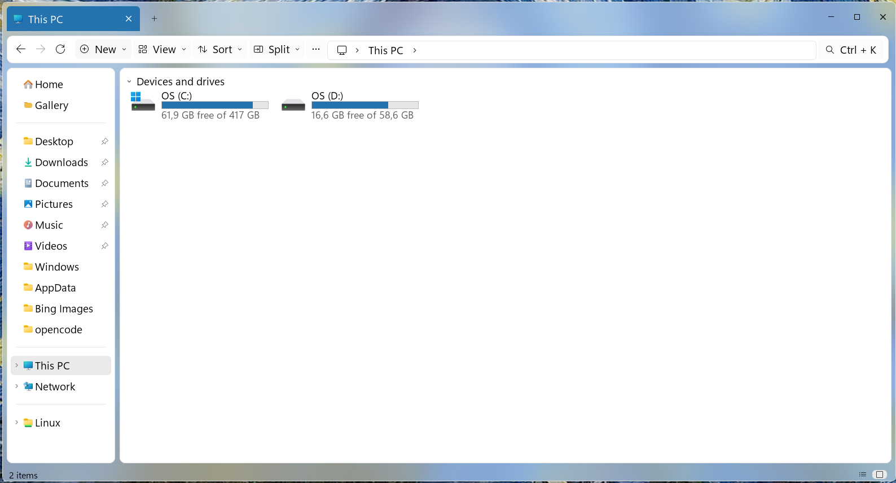

StarFile Explorer
A free, open-source file manager for Windows and Linux with an Explorer-inspired interface. Built in Rust with egui/eframe.
Use the latest GitHub release assets; version numbers change over time. Windows release downloads are verified with SHA-256 before the app applies an update.

Screenshots


The gallery is limited to screenshots with clear StarFile Explorer provenance from this repository’s release/docs history.
Features
- Explorer-inspired workflow: tabs, toolbar/address bar, navigation pane, Home/This PC pages, and multiple view modes.
- Command palette:
Ctrl+K(alsoCtrl+E,Ctrl+F,F3) to search files, run commands, and jump to paths. - Split view:
Ctrl+\to browse two folders side by side. - Quick Look:
Spaceto preview selected items. Embedded PDF/media/HTML playback uses a WebView2-based viewer where available on Windows; behavior depends on the local Windows/WebView2 setup. - Batch rename: rename multiple selected items with patterns (
{name},{n},{date}), live preview, collision checks, and undo. - Background work: folder loading, search, and file jobs run off the UI thread to reduce freezes.
- Recycle Bin integration (Windows): delete to Recycle Bin with undo for supported operations.
- Git status column: shows repository state when enabled.
- Custom wallpaper: optional background image behind translucent panels.
- New-file templates: create documents/templates from the New menu, including an empty
.ziparchive. On Windows, installed shell extensions may add their own archive or context-menu actions.
Windows and Linux differences
- Windows: uses Win32 shell integration for icons/thumbnails, native/extended context menus, OLE drag-out, clipboard file operations, properties, and other Explorer-style features.
- Linux: uses freedesktop/XDG integrations (desktop theme icons, app integration, D-Bus/file-manager behavior, project properties/dialog behavior) and does not provide the same Windows shell extension behavior.
Install
Windows: download StarFile-Setup.exe (per-user installer) or the portable StarFile.exe from the latest release.
Linux:
curl -fsSL https://raw.githubusercontent.com/some-rao/starfile-explorer/main/install.sh | shLinux release artifacts include x86_64 downloads; Flatpak bundles are also produced by release CI.